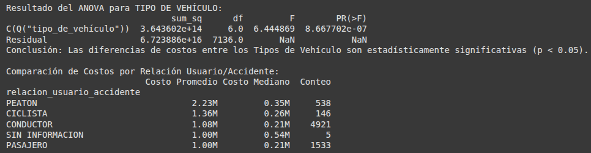
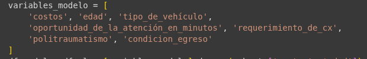
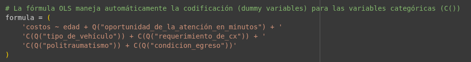

Objetivos del Estudio
Objetivo General
Analizar el comportamiento de los costos de la atención hospitalaria por accidentes de tránsito en Bucaramanga entre 2018 y 2025, identificando tendencias, diferencias por tipo de vehículo y factores asociados al incremento de costos.
Objetivos Específicos
- Descripción temporal: Describir la distribución de los costos y su evolución temporal
- Análisis comparativo: Comparar los costos entre tipos de vehículo y relación usuario/accidente
- Modelado predictivo: Proponer y ajustar un modelo de regresión para explicar la variabilidad del costo a partir de variables disponibles (edad, tipo de vehículo, oportunidad de la atención, entre otras)
Origen de Datos y Metodología
Fuente de Datos
Plataforma datos.gov.co - "Costos de la atención hospitalaria en Bucaramanga por accidentes de tránsito"
Recolección
Descarga de archivo Excel con registros de atenciones por IPS con variables clínicas y administrativas
Procesamiento
Limpieza básica: normalización de variables, conversión de costos a numérico, parseo de fechas
Integridad
No se imputaron valores faltantes para mantener la integridad del reporte
Flujo de Procesamiento de Datos
Datos Puros (Analizados)
34,306 registros
Descargados de datos.gov.co
Tipo de limpieza
Eliminación de valores nulos
Conversión de tipos de datos
Parseo de fechas
Datos Limpios
7,543 registros válidos
Preparados para análisis
Procesamiento Detallado
- Limpieza básica: Normalización de variables, conversión de costos a numérico, parseo de fechas
- Filtrado temporal: Selección de datos entre 01 enero del 2018 al 10 de abril del 2025
- Integridad: No se imputaron valores faltantes para mantener la integridad del reporte
Análisis de las 5V del Big Data
Registros analizados
Datos tabulares: numéricos, categóricos, fecha/hora
Actualización periódica trimestral
Control de tipos y análisis de extremos
Gestión hospitalaria y seguridad vial
Desarrollo de objetivos
Descripción temporal y distribución de costos
Análisis comparativo: Vehículo y usuario/accidente
Comparación de costo por tipo de vehículo
Análisis comparativo: Vehículo y usuario/accidente
Distribución de costo por tipo de vehículo
Análisis comparativo: Vehículo y usuario/accidente
Resultados ANOVA (Análisis de varianza)

Modelo Matemático Propuesto
Regresión Lineal Múltiple
Variable dependiente: COSTOS
Variables Predictoras
- EDAD: Edad del paciente
- TIPO DE VEHÍCULO: Variables dummy por categoría
- RELACIÓN USUARIO/ACCIDENTE: Variables dummy
- Variables temporales: AÑO y MES
Recomendaciones de Modelado
Transformar COSTOS (log) y evaluar supuestos de normalidad de residuos y homocedasticidad
Modelado predictivo: Regresión para el costo
 
Modelado predictivo: Regresión para el costo
Explicación de lo que veran acontinuación
Modelado predictivo: Regresión para el costo
Modelado predictivo: Regresión para el costo
(#edad) => pacientes con mayor riesgo o complejidad(si) => cirujia
Anexos
Principales Hallazgos
Distribución de Costos
Fuerte asimetría a la derecha. Análisis truncado al percentil 99 para mejor visualización.
Diferencias por Vehículo
Se observan diferencias significativas en costos promedio entre tipos de vehículo.
Variabilidad Temporal
La serie mensual muestra variabilidad con picos asociados a períodos específicos.
Valor Máximo
Costo máximo registrado: $262,529,935
Conclusiones
Logros del Estudio
El conjunto de datos permite caracterizar exitosamente el comportamiento económico de la atención hospitalaria derivada de accidentes de tránsito en Bucaramanga.
Caracterización Económica
Identificación de patrones de costos y factores determinantes en la atención hospitalaria
Necesidad de Segmentación
La alta dispersión sugiere segmentar por tipo de evento y severidad clínica
Planificación Hospitalaria
El modelo propuesto puede apoyar la planificación hospitalaria y políticas de prevención
Políticas de Prevención
Los hallazgos proporcionan base evidencial para políticas de seguridad vial
Referencias Bibliográficas
Fuentes de Datos
Alcaldía de Bucaramanga. (2018-2025). Costos de la atención hospitalaria en Bucaramanga por accidentes de tránsito [Conjunto de datos]. Datos.gov.co.
Disponible en: https://www.datos.gov.co/Salud-y-Protecci-n-Social/9-Costos-de-la-atenci-n-hospitalaria-en-Bucaramang/g4vd-w4ip
Referencias Metodológicas
American Psychological Association. (2020). Publication Manual of the American Psychological Association (7th ed.).
Agradecimientos
A la Universidad Tecnológica de Santander (UTS) y al curso de Análisis de datos a gran escala por el apoyo académico para la realización de este estudio.
¡Gracias por su atención!